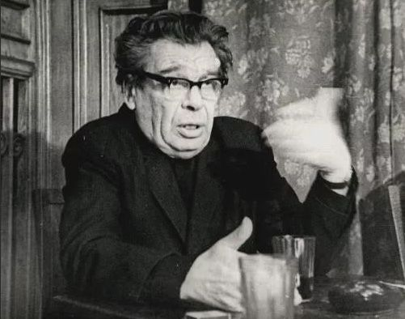

Даниил Борисович Эльконин
— советский психолог и педагог, автор работ о психологических аспектах детских игр и их роли в обучении. Главным трудом его жизни стала разработка системы развивающего обучения. Эльконин считал, что все виды деятельности детей общественны по своей природе, содержанию и форме, поэтому ребёнок с первой минуты рождения и с первых ступеней своего развития является общественным существом.
Даниил Эльконин на протяжении всей своей научной деятельности изучал вопросы психологического развития ребёнка. Его работы были также посвящены психологии игры и проблемам периодизации игровой деятельности. В своих работах он описал структуру и выделил основные элементы игровой деятельности.